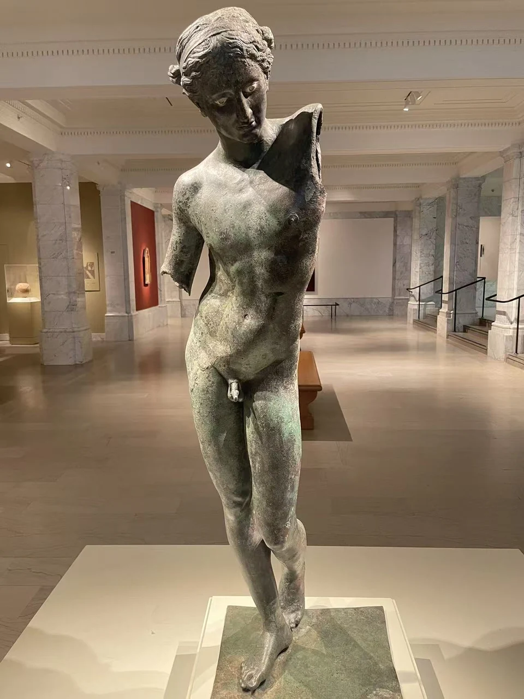
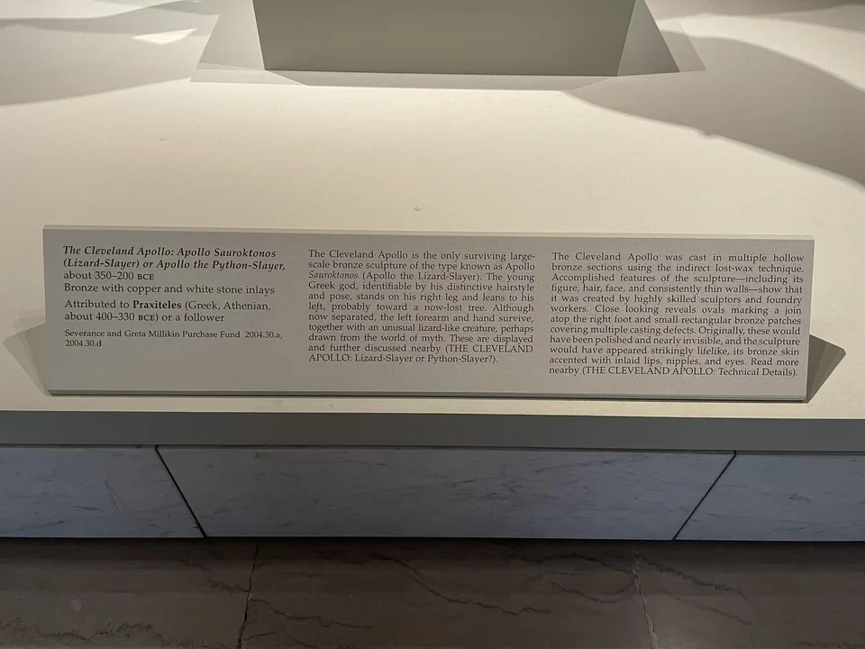
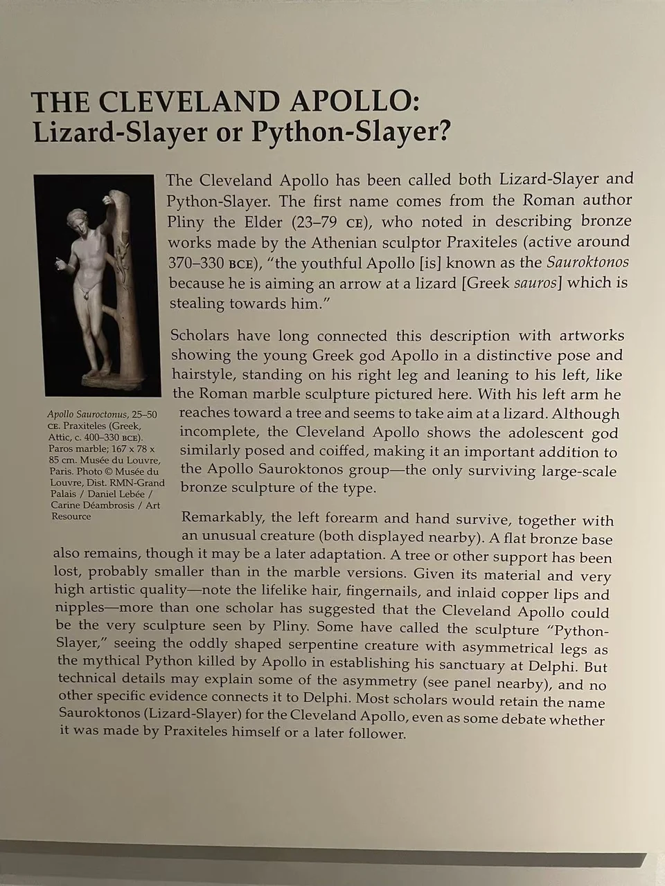
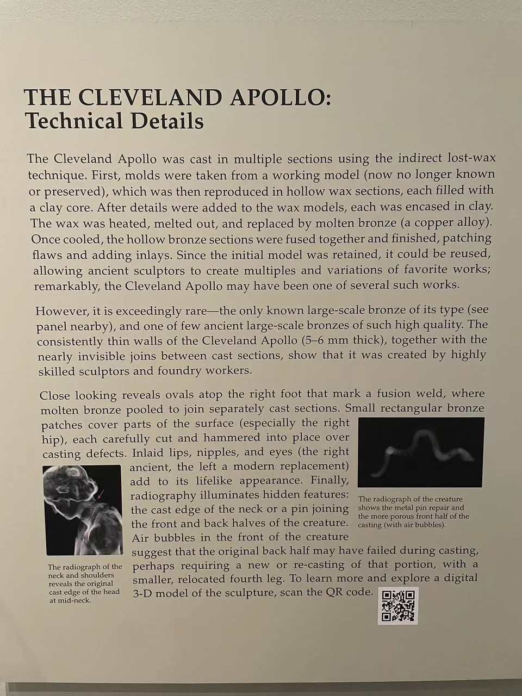

BRONZE / B16
克利夫兰阿波罗：蜥蜴杀手或皮同杀手
阿波罗的身体轻轻侧倾，承重腿与弯曲的另一条腿把躯干组织成舒缓的曲线。分离的手和小动物，则把观看带入身份与制作的讨论。

- 年代
- 约公元前350–200年
- 材料
- 青铜、铜与石质镶嵌
- 形制
- 神像及分离残件
- 尺寸
- 150 × 50.3 × 66.8厘米（馆方整体尺寸）
- 收藏与观看
- 克利夫兰艺术博物馆 · 克利夫兰
- 馆藏号
- 2004.30（组号）
倚靠姿态与两种题名
馆方现称“蜥蜴杀手或皮同杀手”，作者栏为普拉克西特列斯或其追随者，约公元前350—200年。传统的蜥蜴题材与猎杀皮同的解释，涉及如何理解小动物及原姿势；现有证据尚未使两种题名完全合一。 [25]
照片中的身体保留优雅的偏移，失去的支撑却让这种轻盈显得更加悬空。把残件照片放回旁边，能看见研究并非只从一具“完整的像”开始，而要把肢体、动物与技术痕迹逐一对读。
铸造完成后，还要继续制作
馆方技术说明介绍间接失蜡法与分段铸造：各部件铸成后再接合，表面缺陷以小补片处理。右足上方的椭圆状痕迹与熔接有关；右髋等处有嵌入的矩形补片。这些属于铸造整理，并不全是现代修复。 [26]
嘴唇、乳头与眼部使用异材镶嵌，使身体获得颜色与目光。馆方说明右眼保留古代石质材料，左眼为现代补配。细小差异让原来近似铜色的“皮肤”具有更丰富的层次。 [26]
柔软的站姿，来自精密接合的金属。
换一个角度

现场展签与背景说明



资料与来源
断代、归属与收藏资料
动物形态不对称，也可能由铸造或修补造成，不能仅凭这一点确定皮同身份。馆方保留两种题名与作者归属。整体编号2004.30包含雕像和相关残件，2004.30.a为本体。 [25] [26]
技术说明主要据馆方研究；现场全身照不支持把所有细小补片逐一圈出。 [26]
基本资料亦参见本页现场展签；照片中的细节与馆方解释分别叙述。